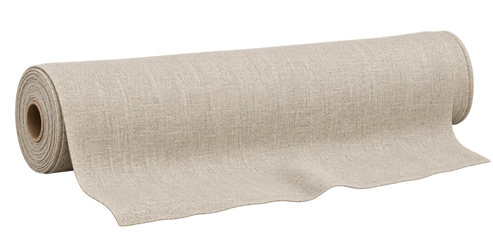

A feeling,
in the making.
Find tactile possibilities for a bright, busy studio. Start with the surface. Follow the feeling.

8fabric samples
shortlistedSample set ready
shortlistedSample set ready
A material note from Loomline↗
100%
Eight fictional material studies.
Select a sample, then explore below.
Select a sample, then explore below.
The closer you look,
the more you feel.
A visual weave study. Scale and texture are illustrative, with no performance or certification claims.
Flax / weave detail